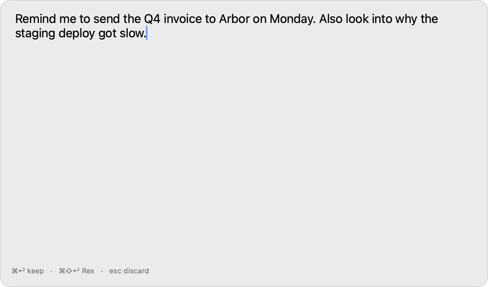

Press a hotkey, type or dictate a thought, and it becomes a Markdown note or starts a Claude Code session.

First launch
macOS will say “Apple could not verify Fragments is free of malware” because the app is not yet notarized.
- Open System Settings → Privacy & Security and scroll to the Security section.
- Click Open Anyway.
- Open Fragments again.
Or, from Terminal:
xattr -d com.apple.quarantine /Applications/Fragments.app